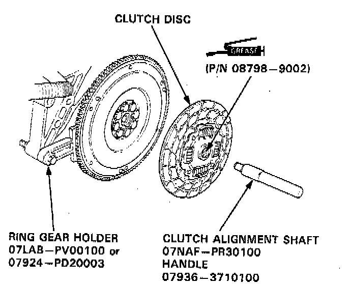
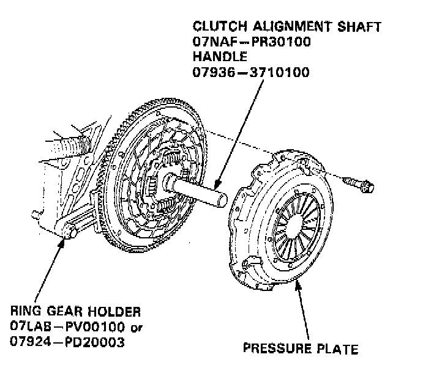
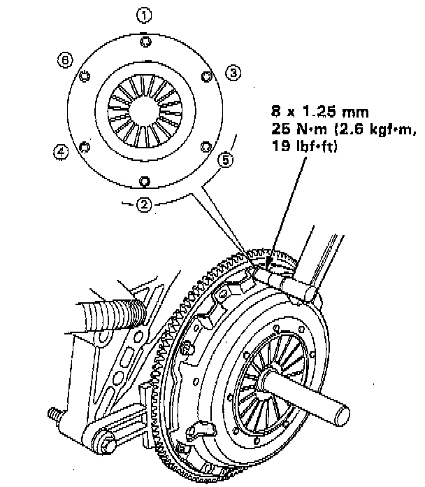

Pressure Plate: Service and Repair
TOOLS REQUIRED- 07LAB-PV00100 Ring Gear Holder
- 07NAF-PR30100 Clutch Alignment Shaft
- Or Equivalent
INSTALLATION

1. Install the ring gear holder.
2. Apply grease to the spline of the clutch disc, then install the clutch disc using the special tools as shown.
NOTE: Use only Super High Temp Urea Grease.

3. Install the pressure plate.

4. Torque the mounting bolts in a crisscross pattern as shown. Tighten the bolts in several steps to prevent warping the diaphragm spring.
5. Remove the special tools.
6. Recheck the diaphragm spring fingers for height.